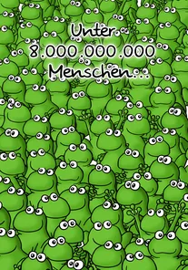
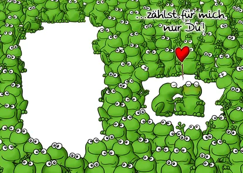
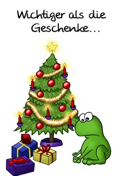
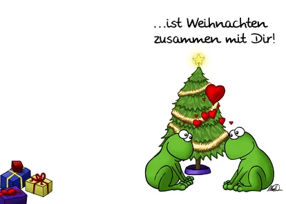
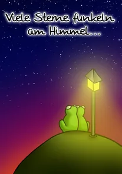
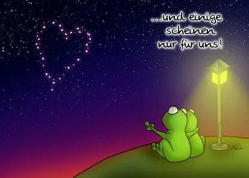
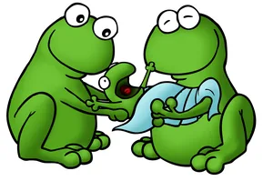
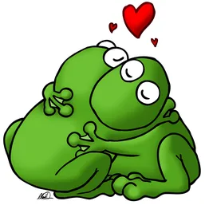
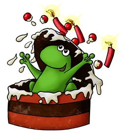

cartoons.de
cartoons.deFrosch-Grußkarten
Im Jahr 2005 wurde die Idee geboren, Liebesgrußkarten mit Fröschen zu gestalten. Damals noch mit einfachen Mitteln selbst gedruckt, habe ich meiner damaligen Frau einige der Karten geschenkt. Ende 2010 habe ich die Karten komplett überarbeitet und neu gestaltet, aber in der heutigen Zeit sendet man mehr Nachrichten digital, als eine Karte zu schreiben...
Frosch-Grußkarten (links Vorder-, rechts Innenseite)






Frosch-Illustrationen weiterer Grußkarten



Impressum · Datenschutz©
2004–2026 Ronald Markworth